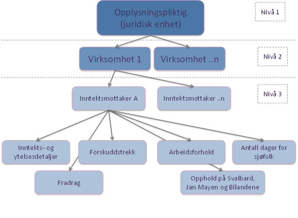

3 Datakilder
Dette kapittelet beskriver de ulike datakildene som benyttes. Først gir det en beskrivelse av a-meldingen, som er hovedkilden. Deretter gis den en beskrivelse av de andre datakildene som benyttes. De fleste datakildene kobles på i Datavarehuset (DVH), beskrevet kapittel 7, mens andre registre kobles på senere i produksjonsprosessen.
3.1 A-meldingen
Hovedkilden til informasjon om arbeidsforhold og lønn er a-meldingen. Opplysningene samles inn via en månedlig melding fra arbeidsgivere. Opplysningene samles inn og sammenstilles av Skatteetaten (SKE).
3.1.1 Dataleveransen fra Skatteetaten
SSB skal ha all informasjon i alle innsendte a-meldinger som ikke er avviste. Imidlertid er dette begrenset til siste versjon av informasjonen fra en gitt opplysningspliktig for en gitt måned, inklusive informasjon fra alle virksomheter, og tilhørende inntektsmottakere som er nye eller endrete. SSB skal ha alle nye meldinger siden forrige forsendelse, det vil si:
Ordinære meldinger for nyeste periode
Erstatningsmeldinger for tidligere perioder
Forsinkede meldinger for tidligere perioder
Dette betyr at SSB vil motta all ny informasjon som har kommet inn siden forrige leveranse til SSB. Dette omfatter ordinære a-meldinger og informasjon om (skattepliktige) ytelser fra NAV.
I tillegg til selve meldingen overføres informasjon om brudd på forretningsregler i form av avvik.
Informasjon oversendes månedlig fra Skatteetaten til SSB. Alle godkjente a-meldinger siden forrige rapportering skal overføres. Overføring skjer ved at Skatteetaten lager flere filer som inneholder all informasjon. Filene krypteres og hentes av SSB over en kryptert SFPT-linje.
Fristen for å levere a-melding til Skatteetaten er satt til den 5. i den påfølgende måneden. Hvis den 5. faller på en helg eller helligdag er fristen første virkedag etter den 5. For å ta hensyn til erstatningsmeldinger og forsinkede meldinger, overføres data til SSB den 10. hver måned (data ble overført den 15. til og med januar 2018).
SSB mottar siste tilgjengelige oppsummering fra Skatteetaten. Eksempelvis hvis en opplysningspliktig i starten av februar sender inn to a-meldinger om periode januar, vil SSB motta disse oppsummert fra Skatteetaten.
Det er utarbeidet en egen utleveringsavtale mellom Skatteetaten og SSB, der bilag 2 beskriver tjenestens innhold.
3.1.2 A-meldingen – struktur og innhold
A-meldingen inneholder informasjon om arbeidsforhold, inntekt/lønn og skatt (skatteetaten.no), og består av tre nivåer som vist i figuren nedenfor. Merk at det ikke rapporteres hierarkisk slik figuren antyder. Figuren illustrerer informasjonsinnholdet og ikke en reell fremstilling av organiseringen rent fysisk.

Virksomhet (bedrift) brukes som betegnelse på en produksjonsenhet, det vil si en lokalt avgrenset enhet som hovedsakelig driver produksjon av varer eller tjenester innenfor en bestemt næring. Virksomheter er konkrete arbeidssteder som for eksempel butikker, hoteller, skoler, bakerier, reklamebyråer og advokatkontorer. Dette omtales som underenhet i Enhetsregisteret (ER).
Foretak (og opplysningspliktig) benyttes som navn på den juridiske selvstendige enheten (hovedenheten).
Nivå 1. Opplysningspliktig (juridisk enhet) (skatteetaten.no)
På dette nivået skal det leveres opplysninger om foretaket meldingen leveres for (kan være et foretak eller en fysisk person), for eksempel organisasjonsnummer/ fødselsnummer/D-nummer, måned opplysningene gjelder for, meldings ID, forskuddstrekk som skal betales, arbeidsgiveravgift som skal betales samt kildesystem (navn på lønnsprogram + versjon).
Nivå 2. Virksomhet (skatteetaten.no) (bedrift/underenhet)
Et foretak kan ha en eller flere virksomheter (underenheter). Dette nivået inneholder opplysninger om virksomhetens organisasjonsnummer samt opplysninger for å beregne arbeidsgiveravgift: grunnlag (ulike typer), sone, sats og beregningskode.
Det er krav om virksomhetsnummer hvis foretaket (den juridiske enheten) har flere virksomheter (krav siden oppstarten i januar 2015). Fra januar 2020 er det også krav om å oppgi virksomhetens organisasjonsnummer dersom man bare har én virksomhet.
Nivå 3. Inntektsmottaker (skatteetaten.no)
For hver inntektsmottaker skal det oppgis fødselsnummer (fnr) eller D-nummer (midlertidig ID-nummer). For personer man venter på skal få tildelt fnr/d-nummer skal følgende fylles ut: internasjonal identifikator (f.eks. passnummer), navn, fødselsdato og ansattnummer.
For hver inntektsmottaker skal flere faste variable fylles ut: inntekts- og ytelsesdetaljer (f.eks. lønn), forskuddstrekk, informasjon om arbeidsforhold (f.eks. start- og stoppdato på arbeidsforholdet, arbeidstidsopplysninger, yrke, permisjoner, permitteringer, m.m.) og antall dager for sjøfolk.
I tillegg til informasjon på de tre nivåene nevnt over inneholder a-meldingen opplysninger om selve innleveringen – hvem har levert inn (foretaket selv, lønnssentral, regnskapsbyrå, etc.), om det er en erstatningsmelding, hvilken periode er det levert for, m.m.
Gjennom a-meldingen får man dermed informasjon om:
Arbeidsforhold
Lønnsinntekt
Pensjon/trygd
Ytelser fra det offentlige
Næringsinntekt
Arbeidsgiveravgift og forskuddstrekk
Skattefrie ytelser av typen sosialstønad og kontantstøtte rapporteres ikke via a-meldingen.
A-meldingen inneholder informasjon om ordinære arbeidsforhold (skatteetaten.no), maritime arbeidsforhold (skatteetaten.no) samt arbeidsforhold som frilanser, oppdragstaker og personer som mottar honorar (skatteetaten.no). A-meldingen inneholder ikke informasjon om selvstendig næringsdrivende.
Arbeidstakere i a-meldingen
Til det «gamle» Aa-registeret, som var hovedkilden til sysselsettingsstatistikken til og med 2014, var det en nedre grense for hvilke arbeidsforhold som skulle rapporteres: arbeidsforholdet måtte vare mer enn seks dager og arbeidstiden skulle være mer enn fire timer per uke. I a-meldingen er det en felles grense for innrapportering av inntekt og av arbeidsforhold-opplysninger. Det betyr at i hovedsak skal arbeidsforhold/lønnsinntekt rapporteres i a-meldingen dersom grensen på kr 1 000 pr år overskrides. Det finnes noen unntak, disse er omtalt i proposisjonen Endringer i folketrygdloven og i skattelovgivningen mv. (tilpasning til a-ordningen), prop 48 L 2013-2014 (regjeringen.no). Meldeplikten inntrer den måneden beløpsgrensen eventuelt overskrides.
I tillegg dekker a-meldingen også frilansere, oppdragstakere, m.m. Dette er en gruppe som tidligere kun var i LTO-registeret, men uten at det var mulig å identifisere om det var frilansere eller ordinære arbeidsforhold.
Hvis rapporteringsperioden er frem i tid
Den opplysningspliktige kan rapportere inntil to måneder frem i tid. Hvis a-meldingen gjelder en kalendermåned mer enn to måneder blir meldingen avvist av Skatteetaten, det vil si a-meldingen anses ikke som levert.
Mer informasjon om a-meldingen generelt, korrigeringer, identifisering av inntektsmottakere, arbeidsforhold, beskrivelser av ytelser (herunder lønn og NAV-ytelser) m.m. i veiledningen til a-meldingen (skatteetaten.no).
3.1.3 A-meldingen – mer om innhold
Nedenfor er arbeidsforhold og inntektstyper nærmere beskrevet.
Arbeidsforhold
Følgende opplysninger vil komme på arbeidsforholdsnivå i a-meldingen:
arbeidsforholdID (for de med flere arbeidsforhold i samme virksomhet),
type arbeidsforhold (4 typer: ordinært arbeidsforhold, maritimt arbeidsforhold, frilansere/oppdragstakere m.m. og pensjon/ytelser uten ansettelsesforhold),
start- og sluttdato på arbeidsforholdet,
antall timer per uke som utgjør fulltid,
avlønningstype (Kodeliste: akkordlønnet, fastlønnet, honorar, Provisjonslønnet /prosentlønn og timelønnet) - UTGIKK fra og med 2019,
yrke (7 siffer),
arbeidstidsordning (Kodeliste: Arbeid offshore - 33,6 t/u, Døgnkontinuerlig skiftarbeid og turnusarbeid - 35,5 t/u, Helkontinuerlig skiftarbeid og andre ordninger med 33,6 t/u, Skiftarbeid - 36,5 t/u, Andre skiftordninger og Ikke-skift),
(avtalt) stillingsprosent,
siste dato for endring av (avtalt) stillingsprosent,
dato for siste lønnsendring,
lønnsansiennitet,
lønnstrinn,
start- og sluttdato permisjoner og permittering,
permisjon- og permitteringsprosent og
permisjons- og permitteringsID (hvis flere permisjoner eller permitteringer samtidig).
Årsak til sluttdato (Kodeliste: Arbeidstaker har sagt opp selv, Arbeidsgiver har sagt opp arbeidstaker, Kontrakt, engasjement eller vikariat er utløpt, Arbeidsforholdet skulle aldri vært rapportert, Endring i organisasjonsstruktur eller byttet jobb internt, Byttet lønnssystem eller regnskapsfører) – ny fra 1.1.2021
Ansettelsesform (Kodeliste: midlertidig, fast) – ny fra 1.1.2021
Informasjon om avlønningstype samles ikke lenger inn i a-meldingen. Det var obligatorisk å rapportere avlønningstype til og med desember 2017 og frivillig i 2018. Fra og med 1.1.2019 er det ikke mulig å rapportere avlønningstype. Det ble fra og med 1.1.2018 opprettet en ny inntektsbeskrivelse: «honorar, akkord, prosent og provisjon». Denne inntektsbeskrivelsen vil sammen med inntektsbeskrivelsene «fastlønn» og «timelønn» erstatte informasjonen i avlønningstype.
Kodelisten for arbeidstidsordningen ble fra og med januar 2019 endret. Ikke-skift, som før 2019 omfattet både «andre skiftordninger enn nevnt i kodelisten» og «ikke-skift», ble splittet i to: «Andre skiftordninger» (enn angitt i kodelisten) og «ikke-skift».
I a-meldingen skilles det mellom a) ordinære arbeidsforhold, b) maritime arbeidsforhold, c) arbeidsforhold som frilanser, oppdragstaker, honorar personer m.m. og d) pensjoner eller andre ytelser:
Ordinære arbeidsforhold (skatteetaten.no)
Ansatte som arbeider for lønn eller annen godtgjørelse og arbeidet ikke er maritimt, skal rapporteres et ordinært arbeidsforhold i a-meldingen.
Maritime arbeidsforhold (skatteetaten.no)
Ansatte som arbeider for lønn eller annen godtgjørelse for arbeid som er av maritim karakter (dvs. at arbeidet utføres til sjøs, enten på et fartøy eller en flyttbar innretning) skal rapporteres som et maritimt arbeidsforhold.
Frilansere, oppdragstakere og personer som mottar honorarer (skatteetaten.no)
Hvis en person utfører arbeid eller oppdrag for lønn eller annen godtgjørelse uten tjenesteforhold/ansettelsesforhold (ikke ansatt), uten å være selvstendig næringsdrivende, skal arbeidsforholdet rapporteres som frilanser, oppdragstaker og personer som mottar honorar.
Denne gruppen omfatter frilansere/oppdragstakere, folkevalgte (politikere i kommuner, fylker og på Stortinget), fosterforeldre, og personer med omsorgslønn, personer som har tillitsverv og styremedlemmer.
Typiske eksempler på yrkesgrupper som ofte regnes som frilansere/oppdragstakere er musikere, tekstforfattere, skuespillere, journalister og oversettere.
Det er kun krav om å rapportere opplysninger om arbeidsforholdet hver gang arbeidsgiver gjør utbetalinger til en person som utfører arbeid eller oppdrag for lønn eller annen godtgjørelse uten tjenesteforhold/ ansettelsesforhold.
Pensjoner eller andre ytelser uten arbeidsforhold (skatteetaten.no)
Omfatter personer som mottar pensjon eller andre ytelser og som ikke er i et arbeidsforhold eller oppdrag. Gjelder også enkelte utbetalinger til næringsdrivende.
Denne arbeidsforholdstypen skal for eksempel benyttes til pensjonister som ikke har et arbeidsforhold, for ansatte på andre tiltak enn midlertidig eller varig lønnstilskudd fra NAV (som arbeidspraksis i ordinær eller skjermet virksomhet), lønn til ansatte som har sluttet (feriepenger, etterbetalinger, mv.), lottakere og reder i stilling om bord på fiske- og fangstfartøy, kursdeltakere som mottar refusjon for tapt arbeidsfortjeneste, oppmuntringspenger, personer som bare mottar utgiftsgodtgjørelse, personer som er på introduksjonsordningen for flyktninger og oppdrag til utenlandske oppdragstakere. Oppdrag til utenlandske oppdragstakere skal rapporteres i Oppdrags- og arbeidsforholdsregisteret (skatteetaten.no). Utenlandske oppdragstakere er unntatt å rapportere arbeidsforhold i a-meldingen for å unngå dobbeltrapportering. Lønn må imidlertid rapporteres i a-meldingen.
Her vil det bli rapportert enkelte arbeidsforhold hvor man skal bli definert som sysselsatt i sysselsettingsstatistikken. Det gjelder blant annet ansatte på andre tiltak enn lønnstilskudd fra NAV, lottaker og reder i stilling om bord på fiske- og fangstfartøy samt oppdrag til utenlandsk oppdragstaker. Arbeidsforhold som rapporteres til Oppdrags- og arbeidsforholdsregisteret kobles på i produksjonsprosessen og er omtalt i kapittel 10.1.
I veiledningen til a-meldingen er det gitt noen eksempler på når man skal velge de ulike arbeidsforholdstypene.
For visse opplysningspliktige finnes det forenklede rapporteringsordninger til Skatteetaten hvor man ikke angir noen arbeidsforholdstyper. Det gjelder:
Forenklet a-melding for veldedig eller allmennyttig organisasjon (A05) (skatteetaten.no)
Skjemaet er for veldedige organisasjoner som engasjerer en privatperson til arbeidsoppdrag og lønnsutgiften ikke inngår i næringsvirksomhet. I 2021 var dette begrenset til samlet lønnsutbetaling fra arbeidsgiver på inntil 800 000 kroner per år eller 80 000 kroner per ansatt per år.
Melding om lønnet arbeid i hjemmet (A04) (skatteataten.no)
Denne er for privatpersoner som betaler lønn til pass av barn i eget hjem eller annet arbeid som for eksempel vedlikehold. Er utbetalt beløp over en øvre årlig grense må man for sistnevnte type arbeid rapportere på en av de ordinære måtene. Lønn under 6 000 kroner per ansatt per år medfører ingen rapporteringsplikt. Hvis utbetalingene overstiger 60 000 kroner i året må det rapporteres på ordinær måte.
For disse arbeidsforholdene rapporteres ikke arbeidsforholdstype, avtalt stillingsprosent, antall timer eller yrke. Det lages imidlertid en todeling av «yrke» ut fra de to typene av lønnet arbeid i hjemmet. I produksjonssystemet som beskrives i dette notatet behandles disse på samme måte som arbeidstakere.
Opplysningene som rapporteres er tilgjengelig i alle datatilstandene, men arbeidsforholdene for én person i samme virksomhet blir aggregert til ett arbeidsforhold senere i produksjonsprosessen (aggregeringsnøkkel er virksomhet*statistikknummer(snr)), se kapittel 13.2.
Inntektstyper
I a-meldingen skal den opplysningspliktige gi opplysninger om de beløp som ytes til inntektsmottakeren:
Opplysninger om inntekter, som kan deles i fire typer: lønn (arbeidsforhold), ytelse fra det offentlige, pensjon/trygd, næringsinntekt
Opplysninger om type inntekt: kontantytelser, naturalytelser eller utgiftsgodtgjørelse
Noen beløp vil kreve en ytterligere presisering, f.eks. må lønn deles opp i kontantlønn, timelønn, faste tillegg, etc.
I tillegg til inntektstype og fordel har alle inntektstypene også en beskrivelse. Beskrivelsen identifiserer inntektstypen. F.eks. for kontantytelse kan beskrivelsen være fastlønn, ventelønn, svangerskapspenger, pensjon eller trygd.
I veiledningen til a-meldingen benyttes ofte begrepet «ytelse» og ikke «inntektstype». I dette notatet benyttes imidlertid inntektstype for å unngå at begrepet «ytelse» i veiledningen til a-meldingen sammenblandes med begrepet «ytelsesforhold», som er begrepet som benyttes i SSBs produksjonssystem. Begrepet «ytelse» brukes om ytelser fra det offentlige og ytelser fra næringsdrivende, f.eks. sykepenger, foreldrepenger, pensjoner, m.m. Se kapitlene om Pensjon/trygd, Ytelser fra det offentlige og Ytelser til næringsdrivende nedenfor.
Kontantytelser
Det finnes mange lønnsinntekter (kontantytelser) i a-meldingen, som f.eks.:
Fastlønn
Timelønn
Honorar, akkord, prosent og provisjon – ny fra og med januar 2018
Tips – ny fra og med januar 2019
Fast tillegg
Uregelmessige tillegg knyttet til arbeidet tid
Helligdagstillegg
Uregelmessige tillegg knyttet til ikke-arbeidet tid
Bonus
Overtidsgodtgjørelse
Styrehonorar og godtgjørelse i forbindelse med verv
Kommunal omsorgslønn og fosterhjemsgodtgjørelse
Sluttvederlag
Feriepenger
Annet («annet» er det som ikke naturlig hører hjemme i noen av de andre lønnsytelsene).
Se veiledningen for a-meldingen (skatteetaten.no) for full oversikt over lønn og andre ytelser.
I tillegg kommer informasjon om naturalytelser og utgiftsgodtgjørelser, se omtale lenger ned.
For noen typer lønnsinntekter skal det oppgis antall. Det gjelder f.eks. antall timer (gjelder timelønnede), antall km (gjelder bilgodtgjørelse), antall dager, antall døgn, etc. I noen tilfeller vil det være krav om ytterligere spesifisering (for eksempel om ytelsen er opptjent i utlandet) og/eller tilleggsinformasjon (for eksempel tidsrom for når ytelses ble opptjent).
Disse opplysningene er tilgjengelig i alle datatilstandene. Men lønnsforholdene blir aggregert senere i produksjonssystemet, se kapittel 13.2.
Naturalytelser
Med naturalytelser menes enhver økonomisk fordel som ytes i annet enn kontanter, sjekker og lignende betalingsmidler, for eksempel fri bil, rentefordel rimelige lån i arbeidsforhold, elektronisk kommunikasjon (mobiltelefon, bredbånd), ansattes kjøp av aksjer/grunnfondsbevis til underkurs, opsjoner, fri reise til og fra arbeidet (fri transport), skattefri barnehageplass, helt eller delvis fri bolig, kost og losji, m.m.
Detaljert informasjon om naturalytelser er tilgjengelig i inndata og i datavarehuset. I prosessen mellom datavarehuset og klargjort fil summeres naturalytelser og vi har kun summen per arbeidsforhold uten ytterligere detaljer.
Utgiftsgodtgjørelse
Med utgiftsgodtgjørelse menes ytelser som en arbeidstaker mottar til dekning av kostnader i forbindelse med utførelse av arbeid. Godtgjørelse kan gi arbeidstaker et overskudd eller inneholde et element av lønn. Eksempler er elektronisk kommunikasjon, smusstillegg, flyttegodtgjørelse, matpenger i forbindelse med overtid, trekkpliktig bilgodtgjørelse, m.m.
Elektronisk kommunikasjon (som for eksempel mobiltelefon) er et eksempel på både en naturalytelse og en utgiftsgodtgjørelse som må innrapporteres hver for seg, etter type ytelse.
Detaljert informasjon om utgiftsgodtgjørelser er tilgjengelig i inndata og i datavarehuset. I prosessen mellom datavarehuset og klargjort fil summeres utgiftsgodtgjørelser og vi har kun summen per arbeidsforhold uten ytterligere detaljer.
Pensjon/trygd
Følgende skal rapporteres:
Pensjon i og utenfor arbeidsforhold og livrenter i arbeidsforhold mv. (gjelder pensjonsytelser fra andre enn folketrygden)
Etterlønn og etterpensjon etter dødsfall
Pensjon i dødsmåneden
Alderspensjon fra folketrygden (brukes kun for ytelser fra NAV)
Uførepensjon fra folketrygden (brukes kun for ytelser fra NAV)
Ektefelletillegg
Barnepensjon fra folketrygden (brukes kun for ytelser fra NAV)
Overgangsstønad til enslig mor eller far som begynte å løpe 31. mars 2014 eller tidligere (brukes kun for ytelser fra NAV)
Overgangsstønad til gjenlevende ektefelle mv. (brukes kun for ytelser fra NAV)
Avtalefestet pensjon
Barnepensjon fra andre enn folketrygden
Introduksjonsstønad (til nyankomne innvandrere)
Supplerende stønad til pensjoner med kort botid i Norge (brukes kun for ytelser fra NAV)
Kvalifiseringsstønad
Nye livrenter i arbeidsforhold (kollektive livrenter) og livrenter tegnet som fortsettelsesforsikringer
Krigspensjon (brukes kun for ytelser fra NAV)
Etterlattepensjon fra folketrygden (brukes kun for ytelser fra NAV)
Uførepensjon fra andre enn folketrygden
Underholdningsbidrag tidligere ektefelle
Pensjon – diverse (gjelder pensjonsytelser som ikke passer inn under overnevnte spesifiserte pensjonsytelsene)
Ytelser fra det offentlige (unntatt pensjoner og trygd)
Følgende ytelser innrapporteres fra det offentlige:
Foreldrepenger fra folketrygden (brukes kun for ytelser fra NAV)
Ventelønn
Dagpenger ved arbeidsløshet (brukes kun for ytelser fra NAV)
Sykepenger fra folketrygden (brukes kun for ytelser fra NAV)
Overgangsstønad til enslig mor eller far som begynte å løpe 1. april 2014 eller senere (brukes kun for ytelser fra NAV)
Underholdningsbidrag til barn -skattefritt (brukes kun for ytelser fra NAV)
Skattefrie tilleggsstønader - gjelder utbetalinger til medlemmer av folketrygden som gjennomfører arbeidsrettede tiltak (brukes kun for ytelser fra NAV)
Arbeidsavklaringspenger (brukes kun for ytelser fra NAV)
Svangerskapspenger (brukes kun for ytelser fra NAV)
Skattefrie stønad til barnetilsyn fra folketrygden (brukes kun for ytelser fra NAV)
Dagpenger til fiskere som bare har hyre (brukes kun for ytelser fra NAV)
Sykepenger til fiskere som bare har hyre (brukes kun for ytelser fra NAV)
Ytelser til næringsdrivende
Enkelte ytelser til næringsdrivende skal rapporteres via a-meldingen:
Betalinger til næringsdrivende
Dagpenger ved arbeidsløshet utbetalt til selvstendig næringsdrivende (brukes kun for ytelser fra NAV)
Godtgjørelse til dagmamma som passer barnet i dagmammas hjem
Sykepenger til selvstendig næringsdrivende (brukes kun for ytelser fra NAV)
Sykepenger mv til dagmamma (brukes kun for ytelser fra NAV)
Sykepenger utbetalt til jord- og skogbrukere (brukes kun for ytelser fra NAV)
Lott eller part (herunder minstelott) til fiskere
Dagpenger til fiskere (brukes kun for ytelser fra NAV)
Sykepenger til fiskere (brukes kun for ytelser fra NAV)
Mer informasjon i veiledningen for a-meldingen
Mer informasjon om arbeids- og lønnsforhold, trekkplikt, arbeidsgiveravgift, kontantytelser (fastlønn, timelønn, etc.), utgiftsgodtgjørelse, etc. finnes i veiledningen til a-meldingen (skatteetaten.no).
3.1.4 A-meldingen – kvalitet
Kvaliteten i a-meldingen regnes som god og bedre enn tidligere kilder brukt til arbeidsmarkeds- og lønnsstatistikk. A-meldingen gir generelt et bedre datagrunnlag ved at det er mer korrekt på individnivå samt at det dekker flere lønnstakerforhold enn det som var hovedkilden til og med 2014 (NAVs Arbeidstakerregister). Det er flere grunner til at kvaliteten har blitt bedre. Med a-meldingen har vi et sammenhengende regelverk som fremtvinger mer korrekt rapportering. Informasjon om arbeidsforhold og lønn kommer nå fra den samme kilden, og ikke fra ulike kilder som tidligere. I tillegg får vi hyppigere rapportering av lønnsinformasjon. Sammenheng i rapporteringen gir også bedre muligheter for kontroll og oppfølging med flere variabler.
Det er særlig to forhold vedrørende arbeidsforhold (jobber) som har blitt bedre med a-meldingen: a) mer korrekte data om hvilke arbeidsforhold som er aktive i referanseuken, og b) bedre informasjon om egenskapene ved arbeidsforholdene, som f.eks. næringstilknytning og arbeidssted.
Opplysninger om arbeidsforhold (jobber) og lønn rapporteres sammen i a-meldingen, mens det ble rapportert i ulike kilder til og med 2014. Jobber ble rapportert til NAVs Arbeidstakerregister (Aa-registeret), mens lønn ble rapportert til Skatteetatens Lønns- og trekkoppgaveregisteret (LTO-registeret).
I a-meldingen får vi rettet opp en del feil som var i det gamle Aa-registeret, spesielt med hensyn til hvilke personer som faktisk er sysselsatt i referanseuken for statistikken. Det var to typer viktige mangler ved rapporteringen til det tidligere Aa-registeret:
en god del arbeidstakerforhold som skulle vært meldt opphørt
forsinkelser i innmelding av nye arbeidsforhold.
Disse feilene motvirket hverandre i noen grad, men ga samlet sett noe for mange arbeidstakere. For noen undergrupper var manglene relativt store. For eksempel var det for mange arbeidstakere i næringen utleie av arbeidskraft (næring 78.2) fordi mange ikke ble utmeldt i perioder de ikke hadde vikaroppdrag. Arbeidstakere som gikk over på alderspensjon ble dessuten for sent meldt ut og tallet på sysselsatte over 67 år var derfor for høyt. Med data fra a-meldingen, der vi henter inn arbeidstids- og lønnsdata samtidig, kan vi kontrollere faktisk aktivitet ved at personer har hatt utbetalt lønn i referansemåneden.
A-meldingen gir også bedre tall for ulike kjennemerker for yrke, arbeidstid, næring og arbeidssted. Alle opplysningene om yrke og arbeidstid hentes nå fra a-meldingen. I det gamle opplegget (til og med 2014) måtte en del av variablene for yrke og arbeidstid beregnes fordi arbeidsforholdene var hentet fra kilder som manglet disse opplysningene (blant annet LTO-registeret). LTO-registeret hadde dessuten bare knytning til foretak og ikke til virksomhet (underenhet) under foretaket. I a-meldingen har vi knytning til virksomhet for alle jobber. Det gir mer presise tall for næring og arbeidsstedskommune.
Kvaliteten på opplysningene om lønn har også blitt bedre i a-meldingen sammenlignet med tidligere kilder. Før a-ordningen, det vil si før 2015, var lønnsstatistikken basert på fulltelling fra registerdata og en utvalgsundersøkelse for privat sektor. Det er flere grunner til at opplysninger om lønn har blitt bedre med a-meldingen:
vi får hyppigere opplysninger om lønn – hver måned istedenfor én gang per år (tellingstidspunkt var 1. september eller 1. oktober avhengig av næring)
fulltelling for lønnstakere i privat sektor (istedenfor utvalg)
Mindre usikkerhet i tallene på grunn av utvalg gir større usikkerhet enn fulltelling
Selv om kvalitet generelt anses som god er det noen utfordringer ved bruk av informasjonen til statistikkproduksjon. Det er dels knyttet til at det særlig rapporteres mange arbeidsforhold som SSB ikke regner som aktive og dels knyttet til rapportering av arbeidstid. Den første utfordringen har vi gode muligheter for å justere for ved å benytte opplysninger om lønn. Dette er omtalt i kapittel 19. Den andre utfordringen er omtalt i kapittel 21 og i artikkelen Metode for forbedring av informasjon om rapportert arbeidstid fra a-meldingen.
Lønn blir rapportert på en annen måte i a-meldingen enn i tidligere lønnsstatistikk (før a-ordningen kom i 2015). I a-meldingen får vi summen som er utbetalt fremfor hvor mye som er lønn for en bestemt avtalt arbeidstid. Dette medfører at vi er mer avhengig av arbeidstid og at vi har opplysninger fortløpende for alle måneder (for eksempel korreksjoner ved «glatting» på grunn av for eksempel etterbetalinger). Det kan i a-meldingene også forekomme at lønnsarter oftere rapporteres feil fordi det nå i motsetning til før er flere lønnsbeskrivelser som kan benyttes (samt at det er mulig å rapportere lønn på «annet»). Skifte av lønns- og personalsystem har også hatt noe betydning da opplysningene endres både på arbeidsforhold og lønn.
I tillegg er det et skille mellom kvalitet til statistikkproduksjons kontra saksbehandling. Informasjon kan være korrekt rapportert og blir riktig til saksbehandling, men kan likevel bli feil til statistikkproduksjon. For eksempel er det noen virksomheter som helt korrekt rapporterer dobbelt fastlønn for en måned. Virksomheter som har lønnsutbetaling den 1. i måneden vil betale ut og rapportere beløpet på måneden før når lønningsdagen faller på en helg eller helligdag. Dette er altså korrekt rapportering, men kan gi feil i statistikkene.
A-meldingen samt en rekke andre registerkilder som omtales i dette kapittelet benyttes for konsistensbehandling mellom ulike datakilder, valg av viktigste arbeidsforhold (jobb) og klassifisering som sysselsatt, beregning av lønn samt for å kvalitetssikre dataene.
Det gjennomføres flere typer kontroller av data, både ved mottak hos Skatteetaten og i SBB som skal bidra til å forbedre datakvaliteten, jf. omtale i kapittel 8. I tillegg har flere av prosessene beskrevet i del 3, klargjøring av data, som formål å sikre kvaliteten til statistikkformål.
3.1.5 Noen sentrale endringer med a-ordningen
Innføringen av a-meldingen har medført noen sentrale endringer sammenlignet med de tidligere kildene til lønns- og sysselsettingsstatistikkene (Aa-registeret, LTO-registeret og oppgave til lønnsstatistikk) som ble benyttet til og med 2014:
Det rapporteres status for arbeidsforholdsopplysningene hver måned i a-meldingen. Det betyr at de samme opplysningene om arbeidsforhold må gjentas hver måned selv om det ikke er noen endringer. Til det gamle Aa-registeret (til og med 2014) skulle arbeidsgivere kun rapportere endringer.
Flere små arbeidsforhold rapporteres ved at nedre grense for å rapportere er samordnet med grensen for å rapportere lønn til Skatteetaten (1000 kroner per år)
Det kan rapporteres flere arbeidsforhold per person i samme virksomhet. Til det gamle Aa-registeret (til og med 2014) ble det kun rapportert ett arbeidsforhold for samme person per virksomhet.
Det rapporteres lønn, delt opp på flere typer lønn, hver måned for alle arbeidsforhold og ikke kun for et utvalg (til lønnsstatistikken). LTO-registeret ga informasjon om lønn for hele året uten skille mellom typer kontantytelser og kun på foretaksnivå.
Det rapporteres yrke også for ansatte i staten i a-meldingen.
3.2 Selvangivelsesregisteret/Skattemeldingen
Selvangivelsesregisteret/skattemeldingen eies av Skattedirektoratet. Registeret omfatter alle personer over 13 år, og består av utvalgte opplysninger fra selvangivelsene. De viktigste kjennemerkene som hentes herfra er næringsinntekt og -underskudd fra selvstendigvirksomhet i henholdsvis primærnæringen og andre næringer. Denne informasjonen ligger til grunn for definering av selvstendig næringsdrivende.
Det er imidlertid en rekke egenskaper ved registeret som begrenser hva som er mulig å få ut av datamaterialet:
Ingen dateringer. Selvangivelsesregisteret har kalenderåret som referansedato. Det er altså kun mulig å finne ut om en person hadde inntekt som selvstendig en eller annen gang i løpet av året. Ved konsistensbehandling med andre registre, kan vi i enkelte tilfeller forbedre dateringen noe.
Kun data for personer. Ingen opplysninger om den enkeltes jobb. Det er for eksempel ikke mulig å knytte inntekt til arbeidsforhold.
Svært lang produksjonstid. Registeret er klart i underkant av ett år etter utløpet av referanseåret.
På grunn av produksjonstiden på registeret benyttes data for året før i den registerbaserte sysselsettingsstatistikken. Dette registeret kobles på etter at den klargjorte filen for arbeidsmarked og lønn er etablert. Se omtale i kapittel 24.
3.3 Virksomhets- og foretaksregisteret (VoF)
SSBs Virksomhets- og foretaksregister (VoF) er et av flere registre som er knyttet til Enhetsregisteret (ER) i Brønnøysundregistrene og inneholder data om virksomheter og foretak i offentlig og privat sektor i Norge. VoF skal være et heldekkende og kvalitetssikret register, og utgjøre en felles populasjon for den økonomiske og næringsmessige statistikken samt personstatistikken.
Virksomhet brukes av SSB som betegnelse på en produksjonsenhet, dvs. en lokalt avgrenset enhet som hovedsakelig driver produksjon av varer eller tjenester innenfor en bestemt næring. Virksomheter er konkrete arbeidssteder som for eksempel butikker, hoteller, skoler, bakerier, reklamebyråer og advokatkontorer. Dette omtales som underenhet i ER.
VoF inneholder informasjon om virksomheten der de sysselsatte arbeider, som virksomhetens hovednæring, sektorkode, organisasjonsform, kommune, m.m.
For privat sektor opererer ER/VoF med foretak som navn på en juridisk selvstendig enhet. Foretak i privat sektor er videre splittet opp i virksomheter (bedrifter/underenheter). I motsetning til privat sektor kan statlig (og kommunal) forvaltning også ha registrert enheter mellom det øverste nivået (foretaket) og det laveste nivået (virksomheten). Disse mellomliggende nivåer omtales som organisasjonsledd.
Hyppighet: 2 ganger per måned (siste dag i måneden og 10. i måneden etter).
Referanseperiode: Ingen. Uttaket gjenspeiler situasjonen i VoF-registeret på overføringstidspunktet. I produksjonssystemet bruker vi situasjonsuttaket per måneden etter statistikkmåneden, det vil si ved utgangen av statistikkmåneden.
3.4 Fokeregisteret (FREG)
Skatteetaten har modernisert Folkeregisteret, og har gått over fra DSF (Det sentrale folkeregisteret) til FREG (folkeregisteret) 15. oktober 2020.
Dataene i Befolkningsregisteret (BeReg), SSBs statistiske kopi av Folkeregisteret, inneholder både data fra DSF og FREG. Denne versjonen ble benyttet til og med september 2022. Fra og med oktober-kjøringen i 2022 benytter vi SSB sin statistiske versjon av Folkeregisteret (FREG).
FREG består av alle personer med fødselsnummer (fnr) uavhengig om personen er bosatt, død, utvandret, m.m. og alle personer med et midlertidig ID-nummer, et såkalt D-nummer (Dnr). Dnr er et identifikasjonsnummer for personer som ikke har norsk fødselsnummer. Dnr er 11-sifret, og består av modifisert fødselsdato (det legges til 4 på det første tallet) og et femsifret nummer.
Hyppighet: én ganger per måned (siste dag i måneden).
Referanseperiode: Ingen. Uttrekket gjenspeiler situasjonen i FREG på overføringstidspunktet. Det er situasjonen etter statistikkmåneden som benyttes, det vil si situasjonen ved utgangen av statistikkmåneden.
3.5 Matrikkelen
Matrikkelen inneholder bl.a. opplysninger om adresser for bosatte og boliger, som grunnkrets, kommune, osv.
Hyppighet: 2 ganger per måned (siste dag i måneden og 10. i måneden etter).
Referanseperiode: Ingen. Uttrekket gjenspeiler situasjonen i Matrikkel-registeret på overføringstidspunktet. Det er situasjonen etter statistikkmåneden som benyttes, det vil si situasjonen ved utgangen av statistikkmåneden.
3.6 Innvandrere og norskfødte med innvandrer foreldre
Innvandrere og norskfødte med innvandrer foreldre er en fil som hentes fra SSBs statistiske kopi av folkeregisteret (FREG) og inneholder blant annet informasjon om landbakgrunn (flere generasjoner) og innvandrerkategori.
Hyppighet: årlig
Referanseperiode: 01.01.
Ny årgang kobles på så fort den er tilgjengelig, vanligvis i løpet av februar året etter referanseperioden.
3.7 Innvandrere etter innvandringsgrunn
Innvandrere etter innvandringsgrunn hentes fra SSBs statistiske kopi av folkeregisteret (FREG) og er en fil med oversikt over innvandrere og deres årsak til innvandring. For flyktninger finnes det egne variable med årsaker. Filen inneholder blant annet informasjon om landbakgrunn (flere generasjoner).
Hyppighet: årlig
Referanseperiode: 01.01.
Ny årgang kobles på så fort den er tilgjengelig, vanligvis i løpet av mai/juni året etter referanseperioden.
3.8 Høyeste fullførte utdanning (NUDB)
Utdanningsnivå er hentet fra Nasjonal Utdanningsdatabase (NUDB). Registeret over befolkningens utdanning omfatter personer registrert bosatt i Norge pr 1.10., og som er 16 år og over ved utgangen av rapporteringsåret. I tillegg registreres 15-åringer som har fullført grunnskolen eller som er i gang med en utdanning utover grunnskolenivå.
Registeret omfatter bl.a. informasjon om høyeste fullførte utdanning og dato for fullført utdanning.
Hyppighet: årlig
Referanseperiode: 1.10.
Ny årgang kobles på så fort den er tilgjengelig, vanligvis i juni året etter referanseperioden. Den nye årgangen kobles på i juli-kjøringen, og da kobles den nye informasjonen på tilbake til oktober.
3.9 Igangværende utdanning
Registeret inneholder informasjon om igangværende utdanning, uansett om man er registrert som bosatt eller ikke i folkeregisteret.
Hyppighet: årlig
Referanseperiode: 1.10.
Ny årgang kobles på så fort den er tilgjengelig, vanligvis i juni året etter referanseperioden. Den nye årgangen kobles på i juli-kjøringen, og da kobles den nye informasjonen på tilbake til oktober.
3.10 ARENA-registeret
ARENA-registeret er NAVs register over arbeidssøkere registrert av saksbehandler ved NAV eller ved selvbetjening på nettsidene til NAV. Denne gruppen er inndelt i ordinære arbeidssøkere, som blant annet omfatter helt ledige, ordinære tiltaksdeltakere og delvis sysselsatte, samt yrkeshemmede.
SSB mottar situasjonsuttak for slutten av hver måned. Disse mottas normalt ca. 7 dager etter referansemånedens utløp.
Hyppighet: Månedlig
Referanseperiode: Vanligvis siste tirsdag i måneden, men noen tilfeller tidligere, typisk i desember og påskemåneden.
3.11 Oppdrags- og arbeidsforholdregisteret (OAR)
Alle oppdrag og underoppdrag gitt til et selskap som er hjemmehørende i utlandet, eller til person som er bosatt i utlandet, gitt at verdien overstiger 20 000 kroner, rapporteres i Oppdrags- og arbeidsforholdsregisteret, OAR (tidligere Sentralskattekontoret for utenlandsaker, SFU).
Det er oppdragsgivers plikt å rapportere oppdraget. Den utenlandske oppdragstakeren har plikt til å rapportere arbeidstakerne som jobber på oppdraget.
Oppdragstaker skal gi opplysninger om alle arbeidstakere som jobber på oppdrag i Norge eller på kontinentalsokkelen. Skatteetaten vil utstede d-nummer og skattekort etter informasjon gitt på skjema RF-1198.
Selskap som er hjemmehørende i utlandet, og som utfører oppdrag i Norge eller på kontinentalsokkelen, må levere blant annet lønn- og ytelser i a-meldingen. Oppdragstakere som leverer skjema RF-1198 har fritak for rapportering til NAVs Arbeidstaker- og arbeidsgiverregister (Aa-registeret). Det vil si at hvis arbeidstakere er rapportert til OAR er det ikke nødvendig å rapportere arbeidsforholdet i a-meldingen.
Mer informasjon om rapportering til OAR på nettsidene til skatteetaten (skatteetaten.no).
Filen SSB mottar fra Skatteetaten inneholder blant annet opplysninger om start-, og stoppdato for arbeidsforholdet, arbeidsstedskommune og juridisk organisasjonsnummer. Filen inneholder ikke organisasjonsnummer virksomhet. SSB mottar et totaluttak som inneholder arbeidsforhold for siste fem år.
SSB mottar fil fra Skatteetaten i begynnelsen av hver måned, vanligvis den 5.
Hyppighet: Månedlig
Referanseperiode: Hele måneden.
3.12 Vernepliktregisteret
Vernepliktregisteret administreres av Forsvarets personell og vernepliktssenter (FPVS). Registeret omfatter alle vernepliktig i Forsvaret og sivilarbeidere, og inneholder datoer for inntak og dimisjon.
Hyppighet: Månedlig
Referanseperiode: Hele måneden.
3.13 Lærlinger
Lærlinger hentes fra SSBs fil med igangværende elever i videregående opplæring. For å identifisere lærlingens lærebedrift benyttes fagopplæringsfil fra fylkeskommunenes datasystem for inntak til og forvaltning av videregående opplæring (VIGO).
Hyppighet: Årlig
Referanseperiode: 30.9 for begge filer
Ny årgang kobles på så fort den er tilgjengelig. Begge filer må være klare før koblingen gjøres. Fagopplæringsfilen fra VIGO får SSB normalt i januar året etter, men filen med igangværende elever i videregående opplæring er vanligvis ikke klar før midten av februar året etter.
3.15 Fastlegeregisteret
Fastlegeregisteret gir oversikt over fastlegene. Fastlegeregisteret hentes årlig fra Norsk helsenett. Se mer informasjon om fastlegeregisteret på nettsidene til Norsk helsenett (nhn.no)
HELFO er ansvarlig for å holde fastlegeregisteret oppdatert. Fila hentes inn én gang per år i januar og kobles på den klargjorte filen for registerbasert sysselsettingsstatistikk (se Del 4). Vi benytter et uttrekk fra fastlegeregisteret per 16.11.
Hyppighet: Årlig
Referanseperiode: 16.11